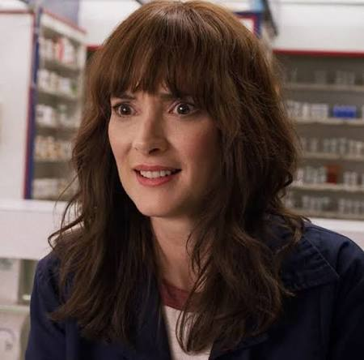

Hawkins character file
Joyce Byers
A determined mother whose love and instincts drive the search for truth in Hawkins.
- Character profile
- Hawkins, Indiana
- Seasons 1–4
Joyce refuses to give up when her son disappears. Her courage and determination make her one of the central figures uncovering the supernatural threats facing her family and town.
Quick facts
- Portrayed by
- Winona Ryder
- Home
- Hawkins; later California
- First appearance
- Season 1
- Family
- Will and Jonathan Byers
- Known for
- Determination and resourcefulness
- Close ally
- Jim Hopper
Biography
Joyce Byers is the mother of Will and Jonathan Byers. When Will goes missing, she notices strange signs and believes that he is still trying to communicate, even when others doubt her.
Working with Jim Hopper and other allies, Joyce becomes deeply involved in the mysteries surrounding Hawkins and the Upside Down. Her persistence helps her family and friends confront dangers that ordinary explanations cannot account for.
Her story also extends beyond Hawkins as she does whatever she can to keep the people she loves safe. Joyce's devotion to her family remains one of the series' most important emotional threads.
Personality traits
- Determined — keeps searching for answers despite setbacks.
- Protective — places her family’s safety first.
- Observant — recognizes unusual patterns and signals.
- Resourceful — improvises under pressure.
- Compassionate — supports people around her in difficult moments.
Relationships
- Will Byers: Her younger son; her efforts to find him drive the first season.
- Jonathan Byers: Her older son and important source of support.
- Jim Hopper: A trusted partner and close personal connection.
- Eleven: Becomes part of her family circle as their lives intersect.
Why this character matters
Joyce highlights the power of family bonds, persistence and trusting evidence even when the truth seems impossible.
Spoiler note — click to reveal (through Season 4)
Joyce uses Christmas lights to communicate with Will in Season 1. By Season 4, she travels with Murray to help rescue Hopper from imprisonment in Russia.